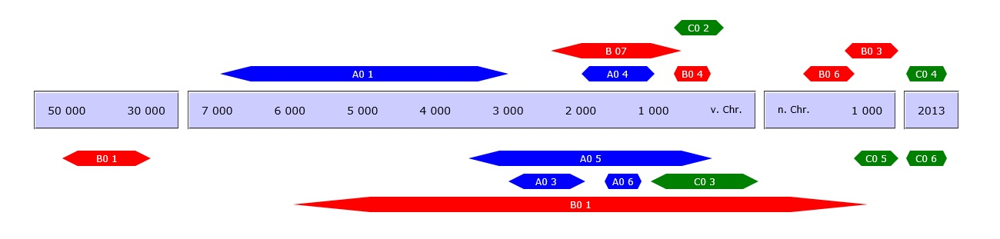

Willkommen
Mit der Buchreihe RessourcenKulturen entsteht ein Publikationsmedium für die Ergebnisse der Forschungen des von der Deutschen Forschungsgemeinschaft geförderten Sonderforschungsbereich SFB 1070 RessourcenKulturen an der Eberhard-Karls-Universität Tübingen. Vorrangig wird dies Dissertationen, andere monographische Schriften und Tagungsbände umfassen. Zur Gewährleistung der Einhaltung allgemeiner Standards der Qualitätssicherung werden alle Bände einem internationalen Peer-Review-Verfahren unterzogen.Mit ihren Bänden spiegelt die Reihe die Fachbreite und interdisziplinäre Kooperation des SFB wider, die aus Archäologien (Ur- und Frühgeschichte, Archäologie des Mittelalters, Vorderasiatische Archäologie, Biblische Archäologie, Klassische Archäologie und Naturwissenschaftliche Archäologie), Empirischer Kulturwissenschaft, Ethnologie, Geographie, Geschichtswissenschaften und Historischen Philologien (Klassische Philologie, Vorderasiatische Philologie) besteht.
Um eine möglichst weite Verbreitung der Ergebnisse des SFB zu gewährleisten, ist neben des Drucks der Werke bewusst auch die Publikationsform des OpenAccess gewählt worden. Die Bände sind über die Homepage des SFB 1070 sowie über die Website der Tübinger Universitätsbibliothek (https://publikationen.uni-tuebingen.de/) einzusehen. dkckjsnnnnnnnn
sdasda


University of Tübingen
SFB 1070 ResourceCultures
Gartenstraße 29 · D-72074 Tübingen
Phone +49 7071 29-73596
www.sfb1070.uni-tuebingen.de
SFB 1070 ResourceCultures
Gartenstraße 29 · D-72074 Tübingen
Phone +49 7071 29-73596
www.sfb1070.uni-tuebingen.de